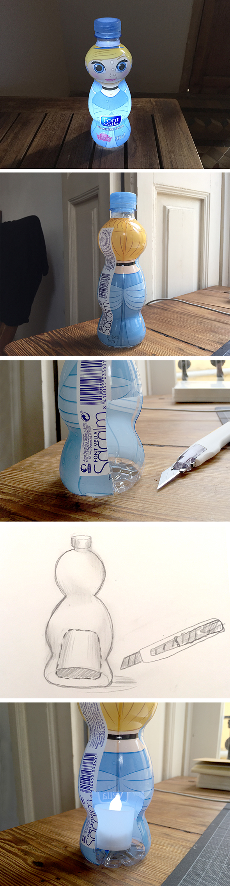

Una decoracion increible. Para una fiesta de superheroes o princesas como luces en la mesa o para colgar. En la parte trasera de la botellas cortas con cutter un agujero tan grande que puedes pasar una vela electrica! Listo! Deco fiesta cumpleaños.
Amazing decor. For a party of superheroes or princesses standing as lights on the table or to hang. In the back of the bottles cut a hole as large as you can put an electric candle in the inside! Ready! Decoration kids birthday.
Spitzen Deco. Für eine Feier mit Superhelden oder Prinzessinnen die leuchtend auf dem Tisch stehen oder aufgehängt werden. Schneide mit dem Cutter ein Loch in die Rückseite, gerade so gross, dass die elektrische Kerze reinpasst! Fertig! Kindergeburtstag decoration.